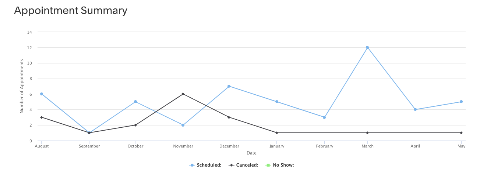

ESDS Office Hours Support#
A core goal of the ESDS community is to enhance the efficiency of the NCAR/UCAR workforce by fostering deeper collaboration across labs. ESDS Office Hours help achieve this goal by serving a dual purpose: helping scientists to more quickly overcome software challenges, which allows them to refocus on their scientific pursuits, and fostering connections among workers across different labs. Office Hours assistants benefit from having a scientific colleague as a “client”, enabling them to refine scientific use cases for their software development and fostering a greater sense of camaraderie. ESDS is always open to additional Office Hours assistants with diverse skill sets to join our team. If you are interested in becoming a part of the ESDS Office Hours team or if you would like to explore a similar service for your own team, this blog post is for you.
If you’re curious about the ESDS Office Hours system, see our previous New Office Hours Appointment System blog post).
Considering Joining the Office Hours Team?#
All are welcome to join the ESDS Office Hours team. Even if you don’t consider yourself a Python expert your experience learning to set up your conda environment or work on HPC systems, for example, is still valuable to your ESDS colleagues. Different experience is valuable, and your bio can reflect the areas that you can or cannot help.
One concern you might have is about the expected time commitment if assisting in Office Hours. You are able to set your own availability (say only Wednesday afternoons) or appointment limits (maybe you only want to help one person per week max) to make sure you are not overburdened. And your appointment scheduling calendar inherits your “busy” time blocks from your UCAR calendar, so you don’t have to worry about being double booked. You can also custom remove availability days if you know you’ll be busy preparing for a conference or submitting a proposal.
Overall though, the commitment is fairly low. While it is important to make ESDS Office Hours consistently available to the community, the demand is varying and mostly low. Here is a graph of how many ESDS Office Hours appointments have been made per month since we switched to the appointment scheduling system. You’ll see that we tend to get between 2 and 6 appointments per month, spread out over all of our assistants.

Steps to Create Your Own Office Hours Appointment#
ESDS Office Hours are hosted by Acuity Squarespace. To join the team you have to first be invited as by a adminstrator of the Acuity account. To do this, you can ping ESDS on Zulip or email Julia Kent (jkent@ucar.edu).
The adminsitrator will have to invite you by navigating to our account “Permissions”.

And then select “Invite Contributor” with your name and email.

You’ll then receive an email from Squarespace inviting you to create an account and giving your access to the ESDS Office Hours scheduling portal.
First you need to create your own calendar for people to make appointments with you. You can navigate here by selecting “Calendars” under the “Business Settings” –> “Availability” section on the left navbar (not to be confused with the whole team’s “Calendar” in the “Overview”).

Select “Add New Calendar” which will open a window to add your name, email, description of the kind of support you can provide, and import a photo (please make it square for a consistent look). Save your calendar. You can re-navigate to this window by selecting “Calendar Settings” at any time.
Then click on the right-facing arrow on your calendar to expand it to show your hours and availability settings.

You’ll see that your “Appointment Types” should be set to “Earth System Data Science (ESDS) Office Hours” by default, if not you can fix this by selecting “Edit Group.”
Next, select “Edit Availability/Limits”.
This will bring you to a window titled “Set Hours of Availability.” Here you should edit and save your regular hours. These can be whatever you like, generally a subset of 9-5 M-F. You can choose to block of lunches, first thing in the morning, last thing on Friday before the weekend up to you.
If you scroll down here you can set hours for specific days, to block of a week or some time you don’t feel you have the capacity to help out with an Office Hours appointment. Vacations and other conflicts are inherited from your Google calendar (we’ll cover that soon).
Optionally, you can toggle over to “Calendar Scheduling Limits.” This gives you options to set your max number of appointments per week or day so that you aren’t ever giving up more than X numbers a week to your core work.

Next we need to set up the two-way sync with your UCAR Google calendar. This is found on the left nav bar in “Business Settings” –> “Sync with other Calendars”.
Find your appointment calendar, and select a calendar to sync with. Only you have access to sync to your personal calendars, so this step cannot be done for you.

Then, it is important to scroll down and check “Hide event title and only show “Busy” to other users” so that the rest of the ESDS Office Hours doesn’t have the ability to see your calendar details (just that you are busy, but not with what). Then click “Save.”

And that’s it! You can double check that it worked by navigating to the ESDS Office Hours scheduling page to see your image there.
Want to Create a New Appointment Type?#
If you are another team at NCAR, you can share our Acuity Squarespace scheduling account. Our account supports up to 36 different calendars (office hours assistants), so as long as our combined usage is less than that we can save $$ by sharing.
In fact we already share this scheduling service with the HPC Research Computing Support group. We can do this by adding additional appointment types to the account.

If you are interested in using this service, reach out to ESDS for assistance.